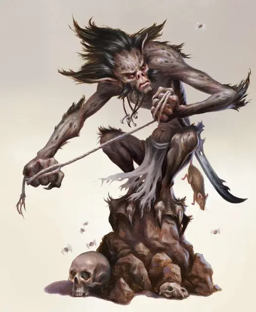

Мизел
Meazel
Средний Монстр, обычно нейтрально-злой

Класс Доспеха 13
Хиты 35 (10к8 - 10)
Скорость 30 футов
| мод | спас | ||
|---|---|---|---|
| СИЛ | 8 | −1 | −1 |
| ЛОВ | 17 | +3 | +3 |
| ТЕЛ | 9 | −1 | −1 |
| мод | спас | ||
|---|---|---|---|
| ИНТ | 14 | +2 | +2 |
| МДР | 13 | +1 | +1 |
| ХАР | 10 | +0 | +0 |
Навыки Восприятие +3, Скрытность +5
Чувства тёмное зрение 120 футов, пассивное Восприятие 13
Языки Общий
Опасность 1 (200 опыта)
Бонус мастерства +2
Среда обитания Болото, Город, Горы, Лес, Луг, Подземье, Пустыня, Холмы
Действия
Гаррота. Рукопашная атака оружием: +5 к попаданию, досягаемость 5 фт., одна цель размера мизеля или меньше. Попадание: 6 (1к6 + 3) дробящего урона, и цель становится схваченной (Сл высвобождения 13 с помехой). До окончания захвата цель получает 10 (2к6 + 3) дробящего урона в начале каждого хода мизеля. Мизел не может использовать атаки оружием, пока он кого-то схватил.
Короткий меч. Рукопашная атака оружием: +5 к попаданию, досягаемость 5 фт., одна цель. Попадание: 6 (1к6+3) колющего урона плюс 3 (1к6) урона некротической энергией.
Теневая телепортация (перезарядка 5-6). Мизел вместе со всеми предметами, которые он носит или несёт, и любое существо, которое он схватил, телепортируются на свободное пространство в пределах 500 футов; начальная и конечная точка должны находиться в тусклом свете или во тьме. Конечной точкой должно быть место, которое мизел уже видел раньше, но оно не обязательно должно находиться на прямой линии видимости. Если конечная точка телепортации занята, то телепортация проходит в ближайшее к ней свободное пространство.
Каждое существо, отличное от мизеля, которое он телепортировал таким образом, проклинается тенью на 1 час или пока не станет целью снятие проклятья [remove curse] или высшее восстановление [greater restoration]. До окончания проклятия любая Нежить и любой обитатель Царства Теней могут ощущать проклятое существо в пределах 300 фт. от себя, что не позволяет этому существу спрятаться от них.
Бонусные действия
Скрытность в тени. В тусклом свете или во тьме, мизел может использовать действие Засада.
Описание
Мизели - ненавистные отшельники, оставившие позади свою прежнюю жизнь, чтобы созерцать свои невзгоды в тени. А теперь зло обжигает их сердца, и они негодуют, если потревожить их страдание. Там, тьма превратила их, а злоба сделала их извращёнными и жестокими. Отныне, они обитают возле пересечения Царства Теней и подстерегают путников, что забрели близ их логова.
Зло, которое развратило мизелов, также наделило их магическими способностями, позволяющими им без труда перемещаться в тени. Они могут переместиться из одной тени в другую, чтобы подстерегать добычу из засады. Иногда они хватают жертв за горло своими удушающими шнурами, а затем отступают; в других случаях они перемещают своих жертв в изолированные места, оставляя несчастных на произвол любых ужасов, которые там скрываются.
Существа, которых мизели утащили во тьму, становятся жертвой проклятия. Проклятие действует в виде маячка; угнетённые, Нежить, или прочая нечисть могут учуять жертву и её местоположение, и спуститься в пучину, чтобы разорвать её в клочья.